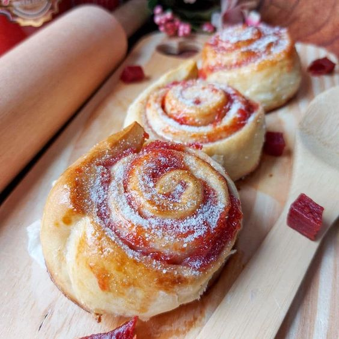

Início
Receitas
Quem somos?
Tipos de Roscas
Receitas

Hungára de Goiabada
A Hungara de goiabada, é uma deliciosa receita de fatia Hungara com um recheio de goiabada
Ingredientes
Estamos empenhados em encontrar
mais receitas para VOCÊ...